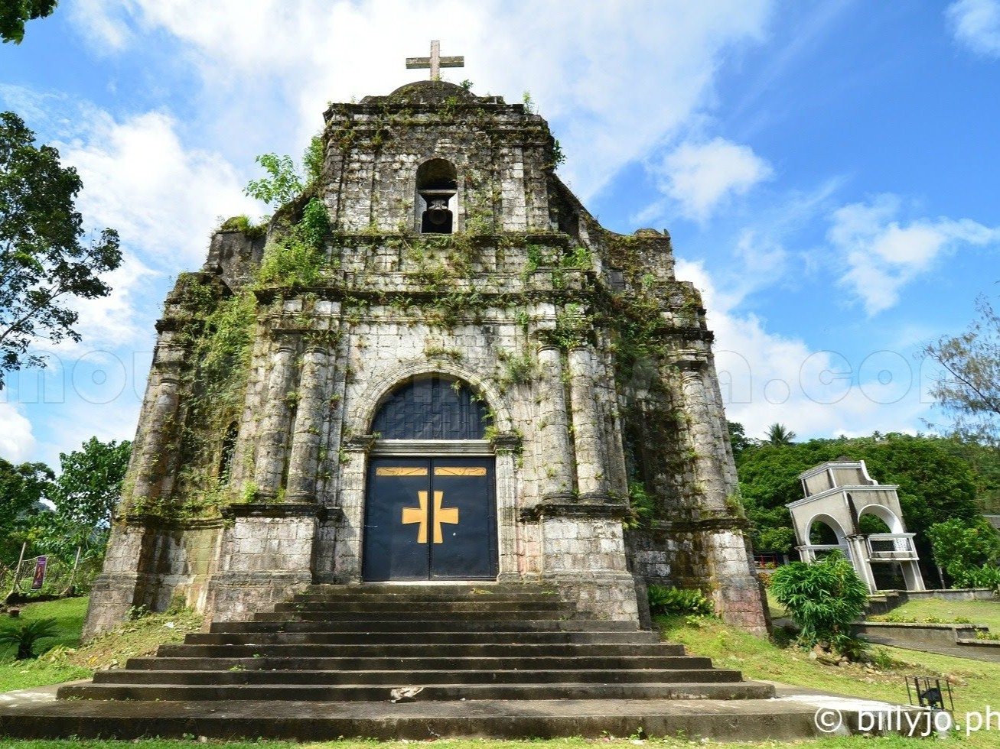

Bato Church (St. John the Baptist Church)

Bato Church, also known as St. John the Baptist Parish Church, is one of the oldest churches in the province. It is made of coral stones and mortar, which was built from 1830-1883. The church is known for its historic architecture and connection to the community’s past. Its historical significance makes it as one of the places I picked. The Bato Church is the oldest standing church in Catanduanes—that represents the province’s roots and the resilience of its structures and community through centuries of natural disasters and change.
| Address | Opening Hours | Price Range | Best Time to Visit |
|---|---|---|---|
| Libod, Bato, Catanduanes, Philippines | Check church schedule on their Facebook Page | Free | Daytime |
Have a Place to Suggest?
Know a place in Catanduanes that deserves to be featured? Suggest a place and help us discover more destinations/tourist spots to include in our guide!